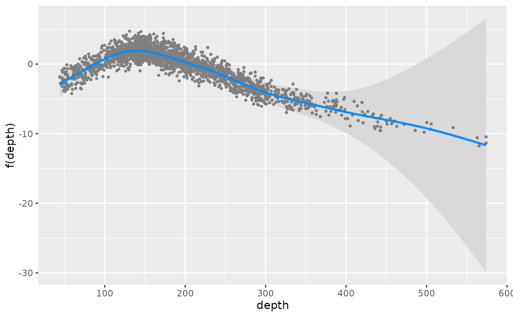
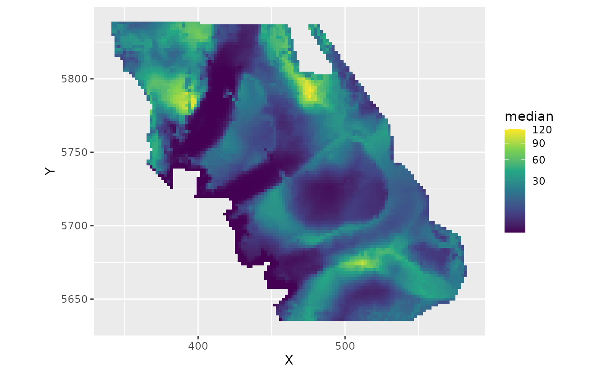
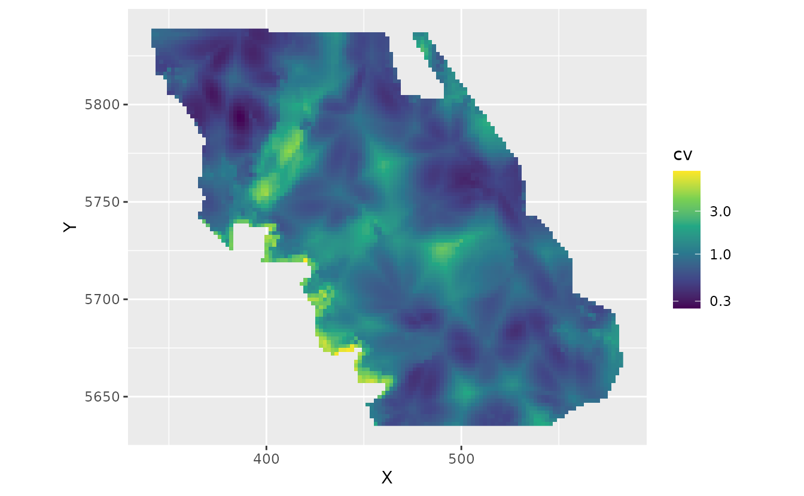

Fitting delta (hurdle) models with sdmTMB
Julia Indivero, Philina English, Sean Anderson, Eric Ward, Lewis Barnett, James Thorson
2025-11-22
Source:vignettes/articles/delta-models.Rmd
delta-models.RmdIf the code in this vignette has not been evaluated, a rendered version is available on the documentation site under ‘Articles’.
sdmTMB has the capability for built-in hurdle models (also called delta models). These are models with one model for zero vs. non-zero data and another component for the positive component. Hurdle models could also be implemented by fitting the two components separately and combining the predictions.
Hurdle models are more appropriate than something like a Tweedie when there are differences in the processes controlling presence vs. abundance, or when greater flexibility to account for dispersion is required.
Built-in hurdle models can be specified with the family
argument within the sdmTMB() function. Current options
include:
Delta-Gamma:
family = delta_gamma(link1 = "logit", link2 = "log"). This fits a binomial presence-absence model (i.e.,binomial(link = "logit")) and then a model for the positive catches only with a Gamma observation distribution and a log link (i.e.,Gamma(link = "log")). Here and with other delta models, thelink1andlink2can be omitted and left at their default values.Delta-lognormal:
family = delta_lognormal(). This fits a binomial presence-absence model (i.e.,binomial(link = "logit")) and then a model for the positive catches only with a lognormal observation distribution and a log link (i.e.,lognormal(link = "log")Poisson-link delta-Gamma or delta-lognormal. See the Poisson-link delta model vignette.
Delta-truncated-negative-binomial:
family = delta_truncated_nbinom1()orfamily = delta_truncated_nbinom2(). This fits a binomial presence-absence model (binomial(link = "logit")) and atruncated_nbinom1(link = "log")ortruncated_nbinom1(link = "log")distribution for positive catches.
To summarize the built-in delta models and the separate components:
| Model Type | Built-in delta function | Presence-absence model | Positive catch model |
|---|---|---|---|
| Delta-gamma | delta_gamma() |
binomial(link = "logit") |
Gamma(link = "log") |
| Delta-lognormal | delta_lognormal() |
binomial(link = "logit") |
lognormal(link = "log") |
| Delta-NB1 | delta_truncated_nbinom1() |
binomial(link = "logit") |
truncated_nbinom1(link = "log") |
| Delta-NB2 | delta_truncated_nbinom2() |
binomial(link = "logit") |
truncated_nbinom2(link = "log") |
Example with built-in delta model
Here, we will show an example of fitting using the built-in delta
functionality, as well as how to build each model component separately
and then combine. The built-in approach is convenient, allows for
parameters to be shared across components, and allows for calculation of
derived quantities such as standardized indexes
(get_index()) with internally calculated standard
errors.
We will use a dataset built into the sdmTMB package: trawl survey data for Pacific Cod in Queen Charlotte Sound, British Columbia, Canada. The density units are kg/km2. Here, X and Y are coordinates in UTM zone 9.
We will first create a mesh that we will use for all the models.
Then we can fit a model of Pacific cod density using a delta-gamma model, including a smoothed effect of depth.
fit_dg <- sdmTMB(density ~ 1 + s(depth),
data = pcod,
mesh = pcod_mesh,
time = "year",
family = delta_gamma()
)The default in built-in delta models is for the formula, spatial and
spatiotemporal structure, and anisotropy to be shared between the two
model components. However, some elements (formula,
spatial, spatiotemporal, and
share_range) can also be specified independently for each
model using a list format within the function argument (see examples
below). The first element of the list is for the binomial component and
the second element is for the positive component (e.g., Gamma). Some
elements must be shared for now (e.g., smoothers, spatially varying
coefficients, and time-varying coefficients).
To specify the settings for spatial and spatiotemporal effects in
each model component, create a list of settings within the
spatial and spatiotemporal arguments. For
example,
spatial = list("on", "off"), spatiotemporal = list("off", "rw").
We could similarly specify a different formula for each component of
the model, using list(y ~ x1, y ~ x2) For instance, we
could include the effect of depth for only the positive model, and
remove it for the presence-absence model.
However, there are currently limitations if specifying separate formulas for each model component. The two formulas cannot have:
- smoothers
- threshold effects
- random intercepts
For now, these must be specified through a single formula that is shared across the two models.
Each model component can similarly have separate settings for
share_range, which determines whether there is a shared
spatial and spatiotemporal range parameter (TRUE) or
independent range parameters (FALSE), by using a list.
Lastly, whether or not anisotropy is included in the model is
determined with the logical argument anisotropy (i.e.,
TRUE or FALSE), and cannot be separately
specified for each model. If anisotropy is included, it is by default
shared across the two model components. However it can be made unique in
each model component by using sdmTMBcontrol(map = ...) and
adding the argument control when fitting the model. This
‘maps’ the anisotropy parameters be unique across model components.
Once we fit the delta model, we can evaluate and plot the output, diagnostics, and predictions similar to other sdmTMB models.
The printed model output will show estimates and standard errors of parameters for each model separately.
print(fit_dg)
#> Spatiotemporal model fit by ML ['sdmTMB']
#> Formula: density ~ 1 + s(depth)
#> Mesh: pcod_mesh (isotropic covariance)
#> Time column: year
#> Data: pcod
#> Family: delta_gamma(link1 = 'logit', link2 = 'log')
#>
#> Delta/hurdle model 1: -----------------------------------
#> Family: binomial(link = 'logit')
#> Conditional model:
#> coef.est coef.se
#> (Intercept) -0.34 0.61
#> sdepth 1.28 2.91
#>
#> Smooth terms:
#> Std. Dev.
#> sd__s(depth) 14.38
#>
#> Matérn range: 61.41
#> Spatial SD: 1.71
#> Spatiotemporal IID SD: 0.81
#>
#> Delta/hurdle model 2: -----------------------------------
#> Family: Gamma(link = 'log')
#> Conditional model:
#> coef.est coef.se
#> (Intercept) 3.67 0.12
#> sdepth 0.31 1.29
#>
#> Smooth terms:
#> Std. Dev.
#> sd__s(depth) 5.41
#>
#> Dispersion parameter: 1.03
#> Matérn range: 14.80
#> Spatial SD: 0.69
#> Spatiotemporal IID SD: 1.45
#>
#> ML criterion at convergence: 6126.400
#>
#> See ?tidy.sdmTMB to extract these values as a data frame.Using the tidy() function will turn the sdmTMB model
output into a data frame, with the argument model=1 or
model=2 to specify which model component to extract as a
dataframe. See tidy.sdmTMB() for additional arguments and
options.
tidy(fit_dg) # model = 1 is default
#> # A tibble: 2 × 5
#> term estimate std.error conf.low conf.high
#> <chr> <dbl> <dbl> <dbl> <dbl>
#> 1 (Intercept) -0.343 0.614 -1.55 0.860
#> 2 sdepth 1.28 2.91 -4.42 6.98
tidy(fit_dg, model = 1)
#> # A tibble: 2 × 5
#> term estimate std.error conf.low conf.high
#> <chr> <dbl> <dbl> <dbl> <dbl>
#> 1 (Intercept) -0.343 0.614 -1.55 0.860
#> 2 sdepth 1.28 2.91 -4.42 6.98
tidy(fit_dg, model = 1, "ran_pars", conf.int = TRUE)
#> # A tibble: 4 × 6
#> model term estimate std.error conf.low conf.high
#> <dbl> <chr> <dbl> <dbl> <dbl> <dbl>
#> 1 1 range 61.4 14.1 39.2 96.3
#> 2 1 sigma_O 1.71 0.265 1.26 2.32
#> 3 1 sigma_E 0.806 0.142 0.570 1.14
#> 4 1 sd__s(depth) 14.4 NA 7.93 26.1
tidy(fit_dg, model = 2)
#> # A tibble: 2 × 5
#> term estimate std.error conf.low conf.high
#> <chr> <dbl> <dbl> <dbl> <dbl>
#> 1 (Intercept) 3.67 0.120 3.44 3.91
#> 2 sdepth 0.31 1.29 -2.22 2.84
tidy(fit_dg, model = 2, "ran_pars", conf.int = TRUE)
#> # A tibble: 5 × 6
#> model term estimate std.error conf.low conf.high
#> <dbl> <chr> <dbl> <dbl> <dbl> <dbl>
#> 1 2 range 14.8 5.02 7.62 28.8
#> 2 2 phi 1.03 0.0502 0.939 1.14
#> 3 2 sigma_O 0.691 0.228 0.361 1.32
#> 4 2 sigma_E 1.45 0.336 0.919 2.28
#> 5 2 sd__s(depth) 5.41 NA 2.43 12.1For built-in delta models, the default function will return estimated
response and parameters for each grid cell for each model separately,
notated with a 1 (for the presence/absence model) or 2 (for the positive
catch model) in the column name. See predict.sdmTMB() for a
description of values in the data frame.
grid_yrs <- replicate_df(qcs_grid, "year", unique(pcod$year))
p <- predict(fit_dg, newdata = grid_yrs)
str(p)
#> 'data.frame': 65826 obs. of 16 variables:
#> $ X : num 456 458 460 462 464 466 468 470 472 474 ...
#> $ Y : num 5636 5636 5636 5636 5636 ...
#> $ depth : num 347 223 204 183 183 ...
#> $ depth_scaled : num 1.561 0.57 0.363 0.126 0.122 ...
#> $ depth_scaled2: num 2.4361 0.3246 0.132 0.0158 0.0149 ...
#> $ year : int 2003 2003 2003 2003 2003 2003 2003 2003 2003 2003 ...
#> $ est1 : num -5.804 -0.796 0.021 0.87 0.98 ...
#> $ est2 : num 3.2 3.71 4.02 4.39 4.43 ...
#> $ est_non_rf1 : num -5.508 -0.598 0.12 0.871 0.882 ...
#> $ est_non_rf2 : num 2.83 3.31 3.59 3.94 3.94 ...
#> $ est_rf1 : num -0.296138 -0.197484 -0.09883 -0.000177 0.098477 ...
#> $ est_rf2 : num 0.368 0.398 0.428 0.459 0.489 ...
#> $ omega_s1 : num -0.00543 0.09317 0.19178 0.29039 0.38899 ...
#> $ omega_s2 : num 0.108 0.119 0.129 0.139 0.15 ...
#> $ epsilon_st1 : num -0.291 -0.291 -0.291 -0.291 -0.291 ...
#> $ epsilon_st2 : num 0.26 0.28 0.299 0.319 0.339 ...We can use predictions from the built-in delta model (making sure
that return_tmb_object=TRUE) to get the index values using
the get_index() function. This can be used with predictions
that include both the first and second models (i.e., using the default
and specifying no model argument) or with predictions
generated using model=NA. The get_index()
function will automatically combine predictions from the first and
second model in calculating the index values. For more on modelling for
the purposes of creating an index see the vignette on Index
standardization with sdmTMB.
p2 <- predict(fit_dg, newdata = grid_yrs, return_tmb_object = TRUE)
ind_dg <- get_index(p2, bias_correct = FALSE)We can plot conditional effects of covariates (such as depth in the
example model) using the package visreg by specifying each
model component with model=1 for the presence-absence model
or model=2 for the positive catch model. Currently,
plotting effects of built-in delta models with ggeffects is
not supported. See the vignette on using visreg
with sdmTMB for more information.
visreg_delta(fit_dg, xvar = "depth", model = 1, gg = TRUE)
#> These are residuals for delta model component 1. Use the `model` argument to
#> select the other component.
#> Warning: `aes_string()` was deprecated in ggplot2 3.0.0.
#> ℹ Please use tidy evaluation idioms with `aes()`.
#> ℹ See also `vignette("ggplot2-in-packages")` for more information.
#> ℹ The deprecated feature was likely used in the visreg package.
#> Please report the issue at <https://github.com/pbreheny/visreg/issues>.
#> This warning is displayed once every 8 hours.
#> Call `lifecycle::last_lifecycle_warnings()` to see where this warning was
#> generated.
#> Warning: Using `size` aesthetic for lines was deprecated in ggplot2 3.4.0.
#> ℹ Please use `linewidth` instead.
#> ℹ The deprecated feature was likely used in the ggplot2 package.
#> Please report the issue at <https://github.com/tidyverse/ggplot2/issues>.
#> This warning is displayed once every 8 hours.
#> Call `lifecycle::last_lifecycle_warnings()` to see where this warning was
#> generated.
visreg_delta(fit_dg, xvar = "depth", model = 2, gg = TRUE)The built-in delta models can also be evaluated with the
residuals() functions in sdmTMB. Similarly to generating
predictions, we can specify which of the model components we want to
return residuals for using the model argument and
specifying =1 or =2. See
residuals.sdmTMB() for additional options for evaluating
residuals in sdmTMB models.
We can also simulate new observations from a fitted delta model. As
in other functions, we can specify which model to simulate from using
the argument model=1 for only presence/absence,
model=2 for only positive catches, or model=NA
for combined predictions. See simulate.sdmTMB() for more
details on simulation options.
simulations <- simulate(fit_dg, nsim = 5, seed = 5090, model = NA)Delta models by fitting two components separately and combining predictions
Next, we will show an example of how to implement a delta-gamma model in sdmTMB, but with each component fit separately and then combined. This approach gives maximum flexibility for each model and lets you develop them on at a time. It has limitations if you are calculating an index of abundance or if you want to share some parameters.
glimpse(pcod)
#> Rows: 2,143
#> Columns: 12
#> $ year <int> 2003, 2003, 2003, 2003, 2003, 2003, 2003, 2003, 2003, 20…
#> $ X <dbl> 446.4752, 446.4594, 448.5987, 436.9157, 420.6101, 417.71…
#> $ Y <dbl> 5793.426, 5800.136, 5801.687, 5802.305, 5771.055, 5772.2…
#> $ depth <dbl> 201, 212, 220, 197, 256, 293, 410, 387, 285, 270, 381, 1…
#> $ density <dbl> 113.138476, 41.704922, 0.000000, 15.706138, 0.000000, 0.…
#> $ present <dbl> 1, 1, 0, 1, 0, 0, 0, 0, 0, 1, 0, 0, 0, 0, 0, 0, 0, 0, 0,…
#> $ lat <dbl> 52.28858, 52.34890, 52.36305, 52.36738, 52.08437, 52.094…
#> $ lon <dbl> -129.7847, -129.7860, -129.7549, -129.9265, -130.1586, -…
#> $ depth_mean <dbl> 5.155194, 5.155194, 5.155194, 5.155194, 5.155194, 5.1551…
#> $ depth_sd <dbl> 0.4448783, 0.4448783, 0.4448783, 0.4448783, 0.4448783, 0…
#> $ depth_scaled <dbl> 0.3329252, 0.4526914, 0.5359529, 0.2877417, 0.8766077, 1…
#> $ depth_scaled2 <dbl> 0.11083919, 0.20492947, 0.28724555, 0.08279527, 0.768440…It is not necessary to use the same mesh for both models, but one can do so by updating the first mesh to match the reduced data frame as shown here:
dat2 <- subset(pcod, density > 0)
mesh2 <- make_mesh(dat2,
xy_cols = c("X", "Y"),
mesh = mesh1$mesh
)This delta-gamma model is similar to the Tweedie model in the Intro
to modelling with sdmTMB vignette, except that we will use
s() for the depth effect.
m1 <- sdmTMB(
formula = present ~ 0 + as.factor(year) + s(depth, k = 3),
data = pcod,
mesh = mesh1,
time = "year", family = binomial(link = "logit"),
spatiotemporal = "iid",
spatial = "on"
)
m1
#> Spatiotemporal model fit by ML ['sdmTMB']
#> Formula: present ~ 0 + as.factor(year) + s(depth, k = 3)
#> Mesh: mesh1 (isotropic covariance)
#> Time column: year
#> Data: pcod
#> Family: binomial(link = 'logit')
#>
#> Conditional model:
#> coef.est coef.se
#> as.factor(year)2003 -0.76 0.42
#> as.factor(year)2004 -0.40 0.42
#> as.factor(year)2005 -0.42 0.42
#> as.factor(year)2007 -1.40 0.42
#> as.factor(year)2009 -1.16 0.42
#> as.factor(year)2011 -1.56 0.42
#> as.factor(year)2013 -0.38 0.42
#> as.factor(year)2015 -0.65 0.42
#> as.factor(year)2017 -1.56 0.42
#> sdepth -5.66 0.50
#>
#> Smooth terms:
#> Std. Dev.
#> sd__s(depth) 85.9
#>
#> Matérn range: 28.70
#> Spatial SD: 1.89
#> Spatiotemporal IID SD: 0.90
#> ML criterion at convergence: 1054.414
#>
#> See ?tidy.sdmTMB to extract these values as a data frame.One can use different covariates in each model, but in this case we
will just let the depth effect be more wiggly by not specifying
k = 3.
m2 <- sdmTMB(
formula = density ~ 0 + as.factor(year) + s(depth),
data = dat2,
mesh = mesh2,
time = "year",
family = Gamma(link = "log"),
spatiotemporal = "iid",
spatial = "on"
)
m2
#> Spatiotemporal model fit by ML ['sdmTMB']
#> Formula: density ~ 0 + as.factor(year) + s(depth)
#> Mesh: mesh2 (isotropic covariance)
#> Time column: year
#> Data: dat2
#> Family: Gamma(link = 'log')
#>
#> Conditional model:
#> coef.est coef.se
#> as.factor(year)2003 4.06 0.20
#> as.factor(year)2004 4.22 0.20
#> as.factor(year)2005 4.19 0.20
#> as.factor(year)2007 3.38 0.20
#> as.factor(year)2009 3.71 0.21
#> as.factor(year)2011 4.51 0.21
#> as.factor(year)2013 4.02 0.19
#> as.factor(year)2015 4.13 0.20
#> as.factor(year)2017 3.84 0.22
#> sdepth -0.28 0.36
#>
#> Smooth terms:
#> Std. Dev.
#> sd__s(depth) 1.89
#>
#> Dispersion parameter: 0.94
#> Matérn range: 0.01
#> Spatial SD: 727.41
#> Spatiotemporal IID SD: 2065.26
#> ML criterion at convergence: 5102.136
#>
#> See ?tidy.sdmTMB to extract these values as a data frame.
#>
#> **Possible issues detected! Check output of sanity().**Next, we need some way of combining the predictions across the two models. If all we need are point predictions, we can just multiply the predictions from the two models after applying the inverse link:
pred <- grid_yrs # use the grid as template for saving our predictions
p_bin <- predict(m1, newdata = grid_yrs)
p_pos <- predict(m2, newdata = grid_yrs)
p_bin_prob <- m1$family$linkinv(p_bin$est)
p_pos_exp <- m2$family$linkinv(p_pos$est)
pred$est_exp <- p_bin_prob * p_pos_expBut if a measure of uncertainty is required, we can simulate from the
joint parameter precision matrix using the predict()
function with any number of simulations selected (e.g.,
sims = 500). Because the predictions come from simulated
draws from the parameter covariance matrix, the predictions will become
more consistent with a larger number of draws. However, a greater number
of draws takes longer to calculate and will use more memory (larger
matrix), so fewer draws (~100) may be fine for experimentation. A larger
number (say ~1000) may be appropriate for final model runs.
set.seed(28239)
p_bin_sim <- predict(m1, newdata = grid_yrs, nsim = 100)
p_pos_sim <- predict(m2, newdata = grid_yrs, nsim = 100)
p_bin_prob_sim <- m1$family$linkinv(p_bin_sim)
p_pos_exp_sim <- m2$family$linkinv(p_pos_sim)
p_combined_sim <- p_bin_prob_sim * p_pos_exp_simp_combined_sim is a matrix with a row for each row of
data that was predicted on and width nsim. You can process
this matrix however you would like. We can save median predictions and
upper and lower 95% confidence intervals:
ggplot(subset(pred, year == 2017), aes(X, Y, fill = median)) +
geom_raster() +
coord_fixed() +
scale_fill_viridis_c(trans = "sqrt")
And we can calculate spatial uncertainty:
pred$cv <- apply(p_combined_sim, 1, function(x) sd(x) / mean(x))
ggplot(subset(pred, year == 2017), aes(X, Y, fill = cv)) + # 2017 as an example
geom_raster() +
coord_fixed() +
scale_fill_viridis_c(trans = "log10")